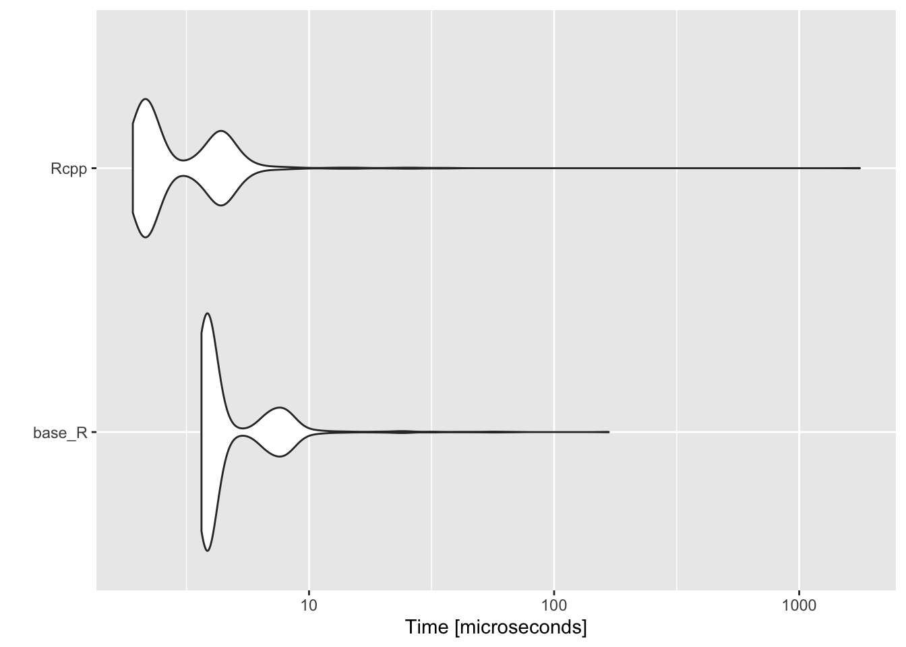
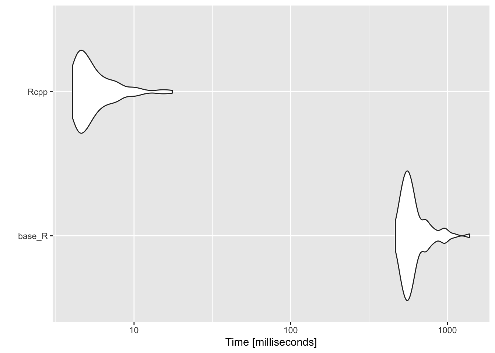
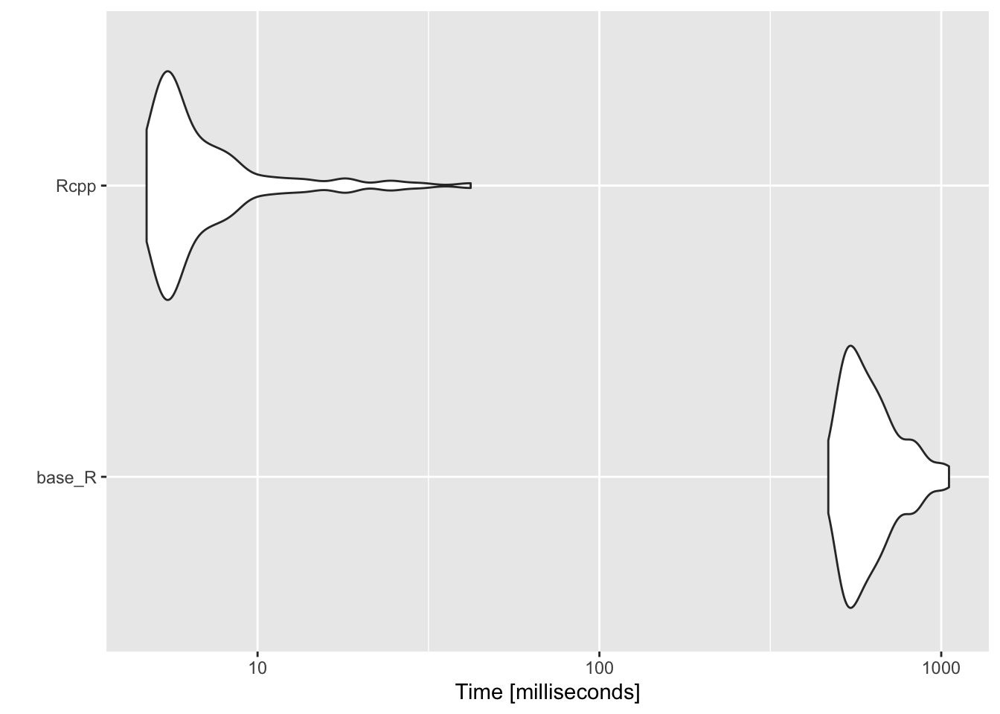

R is really powerful, but for some tasks can be very slow. As data get larger and scripts require more complex algorithms and demanding tasks, even small bits of sluggishness become huge in the aggregate. Compiled languages such as C and C++ can be much faster than R, but require greater programming skill. While learning a compiled language is useful for many researchers, the upfront time needed to learn is often too steep for any given project.
Fortunately, the Rcpp package bridges the gap between the two worlds. While there is a bit of a learning curve for Rcpp, which is based on C++, much R code can be, with few modifications, adjusted to become Rcpp code and run much faster for complex tasks.
This module will give one example of such a speed up. In my own research, I’ve computed the Great Circle (“as the crow flies”) distance between colleges and various geographic centroids many times using either the Haversine or Vincenty formula. But with over 7,500 colleges and universities in the United States, measuring the distance from each county centroid (around 3,000) became slow enough. Doing the same for all census tracks (around 70,000) and census block groups (over 200,000) was almost impossible. With small modifications to base R formula functions, however, I was able to convert them to compiled Rcpp function which run much, much faster.
── Attaching core tidyverse packages ──────────────────────── tidyverse 2.0.0 ──
✔ dplyr 1.1.0 ✔ readr 2.1.4
✔ forcats 1.0.0 ✔ stringr 1.5.0
✔ ggplot2 3.4.2 ✔ tibble 3.1.8
✔ lubridate 1.9.2 ✔ tidyr 1.3.0
✔ purrr 1.0.2
── Conflicts ────────────────────────────────────────── tidyverse_conflicts() ──
✖ dplyr::filter() masks stats::filter()
✖ dplyr::lag() masks stats::lag()
ℹ Use the conflicted package (<http://conflicted.r-lib.org/>) to force all conflicts to become errors
library(Rcpp)library(microbenchmark)
Read in data
This module uses two data frames. The first has the names and locations of all colleges with a physical campus in 2015. The second has the locations of every census block group in the United States from the 2010 Census.
## ---------------------------## input data## ---------------------------## assume we're running this script from the ./scripts subdirectorydf_col <-readRDS(file.path("data", "rcpp", "collegeloc.RDS"))df_cbg <-readRDS(file.path("data", "rcpp", "cblocks.RDS"))
College locations
Here’s a quick peek at the college location data (around 7,600 institutions).
## college locationsdf_col
# A tibble: 7,647 × 5
unitid instnm fips5 lon lat
<int> <chr> <chr> <dbl> <dbl>
1 100654 Alabama A & M University 01089 -86.6 34.8
2 100663 University of Alabama at Birmingham 01073 -86.8 33.5
3 100690 Amridge University 01101 -86.2 32.4
4 100706 University of Alabama in Huntsville 01089 -86.6 34.7
5 100724 Alabama State University 01101 -86.3 32.4
6 100733 University of Alabama System Office 01125 -87.5 33.2
7 100751 The University of Alabama 01125 -87.5 33.2
8 100760 Central Alabama Community College 01123 -85.9 32.9
9 100812 Athens State University 01083 -87.0 34.8
10 100830 Auburn University at Montgomery 01101 -86.2 32.4
# … with 7,637 more rows
Census block group locations
And here’s the census block group location data (around 217,000 block groups).
The Haversine formula is a fairly straightforward trigonometric problem. Since the coordinates in the data are in latitude and longitude and the formula requires radians, a quick helper function deg_to_rad() is used to make the conversion.
## convert degrees to radiansdeg_to_rad <-function(degree) { m_pi <-3.141592653589793238462643383280return(degree * m_pi /180)}## compute Haversine distance between two pointsdist_haversine <-function(xlon, xlat, ylon, ylat) {## radius of Earth in meters e_r <-6378137## return 0 if same pointif (xlon == ylon & xlat == xlon) { return(0) }## convert degrees to radians xlon =deg_to_rad(xlon) xlat =deg_to_rad(xlat) ylon =deg_to_rad(ylon) ylat =deg_to_rad(ylat)## haversine distance formula d1 <-sin((ylat - xlat) /2) d2 <-sin((ylon - xlon) /2)return(2* e_r *asin(sqrt(d1^2+cos(xlat) *cos(ylat) * d2^2)))}
With the formula, we can compute the distance in meters between the first census block group and the first college in the data set pretty quickly.
## store first census block group point (x) and first college point (y)xlon <- df_cbg[[1, "lon"]]xlat <- df_cbg[[1, "lat"]]ylon <- df_col[[1, "lon"]]ylat <- df_col[[1, "lat"]]## test single distance functiond <-dist_haversine(xlon, xlat, ylon, ylat)## showd
[1] 258212.3
Quick exercise
Find the coordinates of two places you know the distance between pretty well (say, your hometown and where you live now or your first college or the nearest big city). Compute the distance and compare to Google's driving distance. It should be shorter (crows fly very straight), but similar. You may want to convert the meters to kilometers or miles. As always Google is your friend for all these steps.
Many to many distance matrix
Now that we have a core function, let’s write a larger function that can take many input points, many output points, and compute the distances between them.
## compute many to many distances and return matrixdist_mtom <-function(xlon, # vector of starting longitudes xlat, # vector of starting latitudes ylon, # vector of ending longitudes ylat, # vector of ending latitudes x_names, # vector of starting point names y_names) { # vector of ending point names## init output matrix (n X k) n <-length(xlon) k <-length(ylon) mat <-matrix(NA, n, k)## double loop through each set of points to get all combinationsfor(i in1:n) {for(j in1:k) {## compute distance using core function mat[i,j] <-dist_haversine(xlon[i], xlat[i], ylon[j], ylat[j]) } }## add row and column namesrownames(mat) <- x_namescolnames(mat) <- y_namesreturn(mat)}
Let’s test it with a subset of ten starting points.
## test matrix (limit to only 10 starting points)distmat <-dist_mtom(df_cbg$lon[1:10], df_cbg$lat[1:10], df_col$lon, df_col$lat, df_cbg$fips11[1:10], df_col$unitid)## showdistmat[1:5,1:5]
Can you find the minimum distance for each starting point? What’s the name of the nearest end point?
Nearest end point
Rather than return a full matrix of distances that we then need to evaluate to find the shortest distance, let’s write a new function, dist_min(), that will take two vectors of points again, but only return the closest point in the second group, with distance, for each point in the first group.
## compute and return minimum distance along with namedist_min <-function(xlon, # vector of starting longitudes xlat, # vector of starting latitudes ylon, # vector of ending longitudes ylat, # vector of ending latitudes x_names, # vector of starting point names y_names) { # vector of ending point names## NB: lengths: x coords == x names && y coords == y_names n <-length(xlon) k <-length(ylon) minvec_name <-vector('character', n) minvec_meter <-vector('numeric', n)## init temporary vector for distances between one x and all ys tmp <-vector('numeric', k)## give tmp names of y vectornames(tmp) <- y_names## loop through each set of starting pointsfor(i in1:n) {for(j in1:k) { tmp[j] <-dist_haversine(xlon[i], xlat[i], ylon[j], ylat[j]) }## add to output matrix minvec_name[i] <-names(which.min(tmp)) minvec_meter[i] <-min(tmp) }return(data.frame('fips11'= x_names,'unitid'= minvec_name,'meters'= minvec_meter,stringsAsFactors =FALSE))}
Let’s test it out.
## test matrix (limit to only 10 starting points)mindf <-dist_min(df_cbg$lon[1:10], df_cbg$lat[1:10], df_col$lon, df_col$lat, df_cbg$fips11[1:10], df_col$unitid)## showmindf
How long will it take to find the closest college to each census block group? Use system.time() and extrapolate to make a best guess.
Rcpp
These worked well, but we only did 10 starting points. We need to find it for over 200,000 starting points. What we need is to convert the base R functions into Rcpp functions.
Below, the full script, dist_func.cpp, is discussed in pieces.
Front matter
The head of an Rcpp script is like an R script in that this is place to #include other header files. This is akin to having library(...) in an R script. At the very least, an Rcpp script needs to include it’s own header files, Rcpp.h.
Next, we define preprocessor replacements. In the process of compiling the script, that is, turning the Rcpp code that’s human readable into machine-readable byte code, the preprocessor first runs through the script. One job is to replace any #define directive with the value it has been given. In our code, that means that anywhere in the script that e_r is found, 6378137.0 literally replaces it.
Finally, we load the Rcpp namespace with using namespace Rcpp;. This means that we don’t have to keep repeating Rcpp::<...> before every function we want. Sometimes, it’s better to do it the long way, especially if you are using functions from multiple libraries that may overlap, but we’re okay doing it this way this time.
// header files to include#include <Rcpp.h>// preprocessor replacements#define e_r 6378137.0#define m_pi 3.141592653589793238462643383280// use Rcpp namespace to avoid Rcpp::<...> repetitionusingnamespace Rcpp;
Utility functions
First, we have the two utility functions to convert degrees to radians and to compute the Haversine distance between two points. A few things to note right away:
When a language is strongly typed, the user must tell the compiler the variable type, like double, int, etc. R will guess what you want and change on fly. This is a nice interactive feature, but is part of what makes R slow sometimes. By strongly typing a variable, the computer knows right away what you want and doesn’t waste time or memory making adjustments.
A few other things to notice:
doubles should end in a . or .0, otherwise they are assumed to be integers; dividing by integers can have weird outcomes so unless you are REALLY sure you want an integer, a floating point number like a double is probably what you want (see degree * m_pi / 180.0)
The variable type before the function name tells the compiler what form the function output will take
Function arguments must also be typed
Finally, for the function to be available to you as a user, you must put // [[Rcpp::export]] just before it.
Moving to the main functions, notice that base R function has been changed only slightly. For the most part, the difference is that variables, argument, and function return must be typed.
A few other differences to note:
the length of a vector is measured with .size()
loops in C++ take the form (; ; ), which works as “start i as 0, check if i is less than the number of starting points, n, add 1 to i, then run the loop; if the check fails, skip the loop.
// compute many to many distances and return matrix// [[Rcpp::export]]NumericMatrix dist_mtom_rcpp(NumericVector xlon, NumericVector xlat, NumericVector ylon, NumericVector ylat, CharacterVector x_names, CharacterVector y_names){// init output matrix (x X y)int n = xlon.size();int k = ylon.size(); NumericMatrix distmat(n,k);// double loop through each set of points to get all combinationsfor(int i =0; i < n; i++){for(int j =0; j < k; j++){ distmat(i,j)= dist_haversine_rcpp(xlon[i],xlat[i],ylon[j],ylat[j]);}}// add row and column names rownames(distmat)= x_names; colnames(distmat)= y_names;return distmat;}
Nearest end point
Again the Rcpp version of this script is almost identical to the base R version, just with variable typing added. Since we’re returning a data frame (Rcpp version: DataFrame), we have to create it with DataFrame::create() as we return it.
// compute and return minimum distance along with name// [[Rcpp::export]]DataFrame dist_min_rcpp(NumericVector xlon, NumericVector xlat, NumericVector ylon, NumericVector ylat, CharacterVector x_names, CharacterVector y_names){// init output matrix (x X 3)int n = xlon.size();int k = ylon.size(); CharacterVector minvec_name(n); NumericVector minvec_meter(n); NumericVector tmp(k);// loop through each set of starting pointsfor(int i =0; i < n; i++){for(int j =0; j < k; j++){ tmp[j]= dist_haversine_rcpp(xlon[i],xlat[i],ylon[j],ylat[j]);}// add to output matrix minvec_name[i]= y_names[which_min(tmp)]; minvec_meter[i]= min(tmp);}// return created data framereturn DataFrame::create(Named("fips11")= x_names, Named("unitid")= minvec_name, Named("meters")= minvec_meter, _["stringsAsFactors"]=false);}
Source the Rcpp file
To compile the Rcpp scripts and have the functions available to us in our R script or session, we need to read in the script with sourceCpp(). This works much like regular source() works, except for Rcpp files. We’ll add the argument rebuild = TRUE so that if need to go back and adjust the source code during a session, it will be rebuilt when we call sourceCpp() again.
Compiling code can take a while. In essence, we’re trading some time now for faster speed down the road. This is why compiled code isn’t great for interactive coding sessions or for small tasks. But our code isn’t complex and compiles rather quickly.
Now that we have both versions of our distance measuring functions, we should compare the time it takes both to run. But first, let’s make sure that they give the same results.
And once more, the same results. We’re now ready to compare speeds!
Benchmarks
To compare really small differences in time, we’ll use the microbenchmark package. Aside from being accurate at small time scales, it makes comparisons based on multiple runs and can plot the differences using the autoplot() function.
First, we’ll compare the core dist_haversine*() functions.
## use microbenchmark to compare tm_single <-microbenchmark(base_R =dist_haversine(xlon, xlat, ylon, ylat),Rcpp =dist_haversine_rcpp(xlon, xlat, ylon, ylat),times = 1000L)## resultstm_single
Unit: microseconds
expr min lq mean median uq max neval cld
base_R 3.651 3.750 4.010598 3.8520 4.029 20.679 1000 a
Rcpp 1.906 2.141 4.500577 2.3035 4.185 1378.462 1000 a
## plotautoplot(tm_single)

Comparing dist_haversine() with dist_haversine_rcpp(), the compiled version isn’t that much faster. Considering we’re on the scale of microseconds, it really isn’t that much faster.
## time for base R to do many to many with 100 starting pointssystem.time(dist_mtom(df_cbg$lon[1:100], df_cbg$lat[1:100], df_col$lon, df_col$lat, df_cbg$fips11[1:100], df_col$unitid))
user system elapsed
5.532 0.044 6.306
## ...and now Rcpp versionsystem.time(dist_mtom_rcpp(df_cbg$lon[1:100], df_cbg$lat[1:100], df_col$lon, df_col$lat, df_cbg$fips11[1:100], df_col$unitid))
user system elapsed
0.062 0.002 0.068
## compare just 10 many to manytm_mtom <-microbenchmark(base_R =dist_mtom(df_cbg$lon[1:10], df_cbg$lat[1:10], df_col$lon, df_col$lat, df_cbg$fips11[1:10], df_col$unitid),Rcpp =dist_mtom_rcpp(df_cbg$lon[1:10], df_cbg$lat[1:10], df_col$lon, df_col$lat, df_cbg$fips11[1:10], df_col$unitid),times = 100L)## resultstm_mtom
Unit: milliseconds
expr min lq mean median uq max neval
base_R 409.045492 446.55024 506.787092 494.631705 554.894677 774.337767 100
Rcpp 4.031125 4.10577 5.087788 4.911738 5.869729 9.618541 100
cld
a
b
## plotautoplot(tm_mtom)

Where we start to see speed improvements in the main function. The compiled version of the many to many function is nearly two orders of magnitude faster!
## time for base R to do many to many with 100 starting pointssystem.time(dist_min(df_cbg$lon[1:100], df_cbg$lat[1:100], df_col$lon, df_col$lat, df_cbg$fips11[1:100], df_col$unitid))
user system elapsed
5.308 0.026 5.446
## ...and now Rcpp versionsystem.time(dist_min_rcpp(df_cbg$lon[1:100], df_cbg$lat[1:100], df_col$lon, df_col$lat, df_cbg$fips11[1:100], df_col$unitid))
Unit: milliseconds
expr min lq mean median uq max neval
base_R 394.187697 450.627588 521.500527 498.440708 587.912705 812.49850 100
Rcpp 4.602717 4.807334 5.925393 5.584605 6.413875 16.53974 100
cld
a
b
## plotautoplot(tm_min)

Similarly, the compiled minimum distance function is much faster than the base R function.
In this case as well as the former, we should note that we aren’t comparing fully optimized versions of either function. That said, while it’s possible that the base R functions could be sped up, neither is likely to come close to matching the speed of the compiled Rcpp versions.
Full run for Rcpp version
Throughout, we’ve been running the functions on a reduced starting data set. But how long does it take to find the nearest college to each census block? Let’s find out!
Just a little over a minute (on my laptop) to compute 217,000 by 7,700 distances, finding and storing the minimally distance college along with its distance!
Not-so quick exercise
Below is a function that computes the great circle distance using Vincenty’s formula. It’s more accurate than the haversine version, but can be much more computationally intensive. Try to convert the base R function into an Rcpp function. You’ll need to start a new script and then use sourceCpp() to read it in and test. Once you’ve got, substitute the respective Vincenty formula functions into the dist_min_*() functions and compare times.
A few things to keep in mind:
1. You’ll need to declare your variables and types (lot’s of double); don’t forget that double numbers need a decimal, otherwise C++ thinks they are integers.
2. Don’t forget your semi-colon line endings!
3. abs() in C++ is fabs()
4. Remember: a^2 = a * a
## base R distance function using Vincenty formuladist_vincenty <-function(xlon, xlat, ylon, ylat) {## return 0 if same pointif (xlon == ylon && xlat == ylat) { return(0) }## convert degrees to radians xlon <-deg_to_rad(xlon) xlat <-deg_to_rad(xlat) ylon <-deg_to_rad(ylon) ylat <-deg_to_rad(ylat) ## ---------------------------------------------------## https:##en.wikipedia.org/wiki/Vincenty%27s_formulae## --------------------------------------------------- ## some constants a <-6378137 f <-1/298.257223563 b <- (1- f) * a U1 <-atan((1- f) *tan(xlat)) U2 <-atan((1- f) *tan(ylat)) sinU1 <-sin(U1) sinU2 <-sin(U2) cosU1 <-cos(U1) cosU2 <-cos(U2) L <- ylon - xlon lambda <- L # initial value## set up loop iters <-100# no more than 100 loops tol <-1.0e-12# tolerance level again <-TRUE## while loop...while (again) {## sin sigma sinLambda <-sin(lambda) cosLambda <-cos(lambda) p1 <- cosU2 * sinLambda p2 <- cosU1 * sinU2 - sinU1 * cosU2 * cosLambda sinsig <-sqrt(p1^2+ p2^2)## cos sigma cossig <- sinU1 * sinU2 + cosU1 * cosU2 * cosLambda## plain ol' sigma sigma <-atan2(sinsig, cossig)## sin alpha sina <- cosU1 * cosU2 * sinLambda / sinsig## cos^2 alpha cos2a <-1- (sina * sina)## cos 2*sig_m cos2sigm <- cossig -2* sinU1 * sinU2 / cos2a## C C <- f /16* cos2a * (4+ f * (4-3* cos2a))## store old lambda lambdaOld <- lambda## update lambda lambda <- L + (1- C) * f * sina * (sigma + C * sinsig * (cos2sigm + C * cossig * (-1+2* cos2sigm^2)))## subtract from iteration total iters <- iters -1## go again if lambda diff is > tolerance and still have iterations again <- (abs(lambda - lambdaOld) > tol && iters >0) }## if iteration count runs out, stop and send messageif (iters ==0) {stop("Failed to converge!", call. =FALSE) }else {## u^2 Usq <- cos2a * (a^2- b^2) / (b^2)## A A <-1+ Usq /16384* (4096+ Usq * (-768+ Usq * (320-175* Usq)))## B B <- Usq /1024* (256+ Usq * (-128+ Usq * (74-47* Usq)))## delta sigma dsigma <- B * sinsig * (cos2sigm + B /4* (cossig * (-1+2* cos2sigm^2)- B /6* cos2sigm * (-3+4* sinsig^2)* (-3+4* cos2sigm^2)))## return the distancereturn(b * A * (sigma - dsigma)) } }